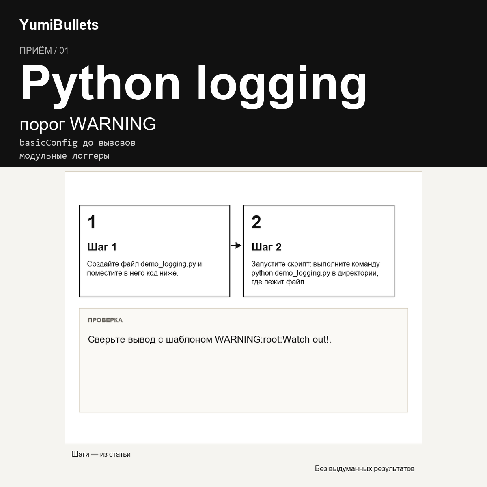

Логирование в Python: быстрый старт с модулем logging
Настройка подробности журнала сводится к установке уровня и выбору формата сообщений. Разобравшись с базовыми вызовами, вы быстро научитесь управлять тем, что попадает в журнал.

Настройка подробности журнала сводится к установке уровня и выбору формата сообщений. Разобравшись с базовыми вызовами, вы быстро научитесь управлять тем, что попадает в журнал.